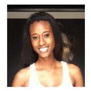

Craig Anderson
Derry, New Hampshire
Gregory Hall
Denver, Colorado
Christy Andrews
Cheyenne, Wyoming
Vivianne Hoskinson
Burrton, Kansas
Julian Levant
San Francisco, Californie
Sarah Bohannon
Santa Monica, Californie
Jeffrey Baefsky
Arcadia, Californie
Andrew Poklaske
Chicago, Illinois
Matt Pequegnat
Hilton Head,
Caroline du sud
Kent Walker
Charlotte,
Caroline du nord
Robert Doyle
Camas, Washington
Barbara A Woodin
West Chester,
Pennsylvanie
Shay Cooper
Baton Rouge, Louisiane
Brad Fingeroot
West Bloomfield,
Michigan
Karyn Greenwood
Missoula, Montana
John Farina
Brinklow, Maryland
Mark Strand
Nokesville, Virginie
Miguel Tuason
Arlington, Virginie
René Leon
Sleepy Hollow, New York
Mina Parkins
New York, New York
Natasha L. Logan
New York, New York
Gene Fair
Beach City, Ohio
Jeff Wong
Boynton Beach, Floride
Deborah Barlow
Tampa, Floride
Amanda Lambert
Salt Lake City, Utah
Veronica Regalado
Houston, Texas
Felix Diaz
San Antonio, Texas
Felix Diaz
64 ans
San Antonio, Texas
Retraité
Vote : indécis
Je ne sais toujours pas pour qui je vais voter, mais je penche quand même pour Barack Obama en raison de son programme social. Je pense notamment à la réforme de la santé et au Dream Act, la loi qui régulariserait les enfants d'immigrés arrivés aux États-Unis.
Veronica Regalado
38 ans
Houston, Texas
Femme au foyer
Vote : Barack Obama
Les Hispaniques qui vivent au Texas n'arrivent pas à trouver un candidat qui les représente vraiment. Voter Barack Obama est, pour moi, une façon d'y remédier.
Amanda Lambert
60 ans
Salt Lake City, Utah
Directrice d'une maison
de retraite
Vote : Barack Obama
Le gouvernement doit absolument aider les gens qui ne sont pas en mesure de se prendre en charge. Les citoyens doivent payer des impôts, dans des proportions raisonnables, pour aider ceux qui en ont besoin.
Deborah Barlow
49 ans
Tampa, Floride
Courtier
Vote : Mitt Romney
J'ai grandi dans une maison de confession chrétienne baptiste et conservatrice. Mes parents étaient républicains et j'ai suivi le modèle familial. Mais je vote pour Romney surtout parce qu'il sera le meilleur pour prendre soin de notre pays et de nos familles.
Jeff Wong
26 ans
Boynton Beach, Floride
Conseiller d'éducation
dans un lycée
Vote : Barack Obama
Le président Obama est le plus à même de représenter les intérêts économiques des simples citoyens comme moi, et non ceux des entreprises et des banques. De plus, le candidat démocrate a montré qu'il soutenait les droits civiques de tous les Américains, au-delà de leurs origines, leur sexe et leur orientation sexuelle.
Gene Fair
63 ans
Beach City, Ohio
Retraité
Vote : Barack Obama
En proposant une importante réduction d'impôts pour les plus riches, qui représentent 1 % de la population, et en évoquant des baisses supplémentaires pour les "créateurs d'emplois", je trouve que le parti républicain, pour lequel j'ai milité pendant 50 ans, devient le parti des riches et des sectaires.
Natasha L. Logan
30 ans
New York, New York
Productrice
Vote : Barack Obama
Le président démocrate a offert à notre pays un système de santé fonctionnel. Obama est en mesure, plus que son adversaire, de proposer des solutions durables sur deux autres problèmes : notre politique d'immigration qui est perfectible et un meilleur accès à l'enseignement supérieur.
Mina Parkins
37 ans
New York, New York
Directrice
d'une école de commerce
Vote : Mitt Romney
J'ai quitté la Serbie en 2004 pour venir ici. Ce sera donc la première fois que je vote. Je suis fiscalement très conservatrice et je ne crois pas en la redistribution des richesses. Romney me plaît parce qu'il a l'esprit d'un chef d'entreprise.
René Leon
38 ans
Sleepy Hollow, New York
Chef dans un restaurant
Vote : Barack Obama
C'est la première fois que je vais voter à une élection présidentielle. J'ai choisi de voter pour Obama parce que je suis un immigrant et que les politiques démocrates sont celles qui nous soutiennent le plus.
Miguel Tuason
40 ans
Arlington, Virginie
Dirigeant d'une petite
entreprise
Vote : Barack Obama
En tant qu'homosexuel, je vote pour Obama car il n'y a pas d'autres choix. En tant qu'Américain, j'estime que les démocrates sont les mieux placés pour continuer de redresser le pays laissé à la dérive par George W. Bush et Dick Cheney.
Mark Strand
56 ans
Nokesville, Virginie
Président d'une organisation
non lucrative
Vote : Mitt Romney
Nous avons besoin de quelqu'un doté d'une bonne expertise économique pour faire des choix difficiles mais indispensables si on veut repartir repartir sur des bases financières saines. Le pays souffre également d'une politique étrangère floue et peu concluante. La récente attaque terroriste contre le consulat américain en Libye est la preuve que l'administration Obama est en total décalage avec les problèmes du monde arabe.
John Farina
62 ans
Brinklow, Maryland
Professeur d'études
religieuses
Vote : Mitt Romney
L'administration du président Barack Obama a lamentablement échoué en ce qui concerne la création d'emplois. Romney, lui, est un chef d'entreprise très compétent. C'est ce dont nous avons besoin maintenant : quelqu'un de moins idéologue, de moins rêveur, de plus pragmatique et d'un gestionnaire plus expérimenté.
Karyn Greenwood
27 ans
Missoula, Montana
Étudiante en biologie
Vote : Barack Obama
La politique menée par Obama a permis d'éviter la récession et de redresser petit à petit l'économie. J'espère qu'il adoptera des positions plus audacieuses durant les quatre prochaines années parce qu'il ne remettra pas son mandat en jeu.
Brad Fingeroot
18 ans
West Bloomfield, Michigan
Étudiant
Vote : Mitt Romney
Romney propose des idées bien différentes de celles du président Obama et souhaite s'attaquer aux réelles difficultés du pays, et non s'amuser à faire de la rhétorique et accuser la précédente administration d'être à l'origine des difficultés actuelles.
 Shay Cooper
Shay Cooper
43 ans
Baton Rouge, Louisiane
Dirigeant d'entreprise
Vote : Mitt Romney
Le pays n'a pas été fondé sur des bases socialistes. Nous sommes endettés et on a besoin de quelqu'un qui sache rendre notre pays plus compétitif, comme avant.
Barbara A. Woodin
71 ans
West Chester, Pennsylvanie
Retraitée
Vote : Barack Obama
Il mérite d'être réélu. J'ai le sentiment qu'il peut travailler avec le Congrès pour relancer l'économie, à condition bien sûr que la Chambre des représentants, majoritairement républicaine, daigne travailler avec lui au lieu de bloquer toutes ses propositions.
Robert Doyle
52 ans
Camas, Washington
Vendeur
Vote : Mitt Romney
Je soutiens Romney parce que c'est un homme d'affaires qui s'y connaît en matière fiscale, parce qu'il a aussi redressé les finances du Massachusetts [dont il a été le gouverneur de 2003 à 2007] et sauvé les Jeux olympiques d'hiver de Salt Lake City en 2002. Et parce que je suis un catholique anti-avortement.
Kent Walker
64 ans
Charlotte, Caroline du Nord
Enseignant à la retraite
Vote : Barack Obama
Je suis un indépendant. Mais je soutiens Barack Obama car je trouve qu'il s'en sort plutôt bien compte tenu de tous ces crétins républicains qui siègent maintenant au Congrès. Romney est un riche snob qui soutiendrait n'importe quelle cause pour être élu.
 Matt Pequegnat
Matt Pequegnat
46 ans
Hilton Head, Caroline du Sud
Fonctionnaire
Vote : Mitt Romney
Les démocrates sont nocifs…
Andrew Poklaske
66 ans
Chicago, Illinois
Commerçant fleuriste
Vote : Barack Obama
Les républicains n'ont rien à m'offrir. Ils sont trop radicaux, voire pernicieux sur les dossiers sociaux. On a traversé huit années de néo-conservatisme sous George W. Bush, qui a fait l'apologie de la guerre. Le président sortant, lui, est en train d'y mettre un terme.
Jeffrey Baefsky
55 ans
Arcadia, Californie
Sans emploi
Vote : Barack Obama
Le programme de Romney contre les malades, les femmes, les immigrés et les classes ouvrières me donnent la nausée. En politique intérieure, Obama est bien plus réformateur que les fondamentalistes religieux et leurs amis capitalistes du Parti républicain. En revanche, en matière de politique étrangère, je le trouve un peut trop à droite.
 Sarah Bohannon
21 ans
Santa Monica, Californie
Étudiante
Vote : Barack Obama
Je n'avais pas l'âge de voter en 2008, mais j'ai suivi l'élection de Barack Obama avec beaucoup d'intérêt, en particulier pour moi qui suis Afro-Américaine. Aujourd'hui, je soutiens Obama parce que je suis plus sensible à ses idées et à son message qu'à celui de Romney.
Julian Levant
58 ans
San Francisco, Californie
Propriétaire d'un magasin
de journaux
Vote : Barack Obama
Je suis pour les démocrates car ils protègent généralement les plus vulnérables au sein de la société, ils sont aussi ouverts aux évolutions sociales et soutiennent les classes ouvrières et moyennes. Quand les républicains sont à la Maison Blanche, c'est tout le contraire.
Vivianne Hoskinson
60 ans
Burrton, Kansas
Professeure et travailleuse
sociale à la retraite
Vote : Mitt Romney
On ne peut pas crouler sous les dettes plus longtemps. On ne peut pas non plus laisser nos libertés individuelles se restreindre, détruire nos valeurs familiales et saboter la politique étrangère.
Christy Andrews
63 ans
Cheyenne, Wyoming
Agent d'assurance
à la retraite
Vote : Mitt Romney
Obama est en train de faire sombrer les États-Unis dans les bas fonds du socialisme. Il veut un gouvernement de plus en plus puissant, sur lequel une majorité des gens peut se reposer. Ce ne sont pas sur ces principes que les États-Unis ont été bâtis.
Gregory Hall
45 ans
Denver, Colorado
Expert en technologie
de l'information
Vote : Barack Obama
Obama représente la nation entière. J'ai le sentiment que les démocrates proposent une meilleure vision pour l'avenir. On ne laisse personne sur le bas côté. Pour nous, un pays qui réussit aide ses citoyens.
Craig Anderson
53 ans
Derry, New Hampshire
Artisan
Vote : Barack Obama
Mes revenus ne sont pas élevés et je ne suis pas un religieux fanatique donc je ne pense pas que les républicains défendent mes intérêts. Les démocrates tentent d'améliorer le bien-être social des Américains sans chercher pour autant à contrôler nos vies personnelles comme le font les républicains.